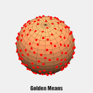
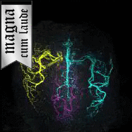

|
I am a final year doctoral student at the Wellcome Centre for Integrative Neuroimaging at the University of Oxford, where I work in the Physics Group on developing novel MRI acquisition and reconstruction methods. I work with sparsity based reconstruction methods for highly undersampled dynamic arterial spin labelling angiography. I am supervised by Dr Tom Okell, Dr Mark Chiew, and Prof Peter Jezzard and funded by the Engineering and Physical Sciences Research Council through the Oxford-Nottingham Biomedical Imaging Centre for Doctoral Training. I did my undergraduate degree in Physics with Medical Physics at University College London (graduated 2016). Currently looking for post-doctoral positions for start in 2021! |

|
|
Here are some examples of my research, public engagement tools, etc. Publications: - Schauman S.S., Chiew M., Okell T.W. "Highly Accelerated Vessel-Selective Arterial Spin Labeling Angiography using Sparsity and Smoothness Constraints", 2020, Magnetic Resonance in Medicine,10.1002/mrm.27979 |
|  |
S. Sophie Schauman, Thomas W. Okell, Mark Chiew Submitted to the ISMRM Workshop on Sampling and Image Reconstruction, Sedona, USA, 2020 GitHub, Poster Radial sampling in MRI has many advantages over Cartesian trajectories, including less coherent aliasing when undersampled and robustness to motion. Uniform radial sampling provides the highest SNR efficiency but lacks flexibility in choosing temporal windows for reconstruction. Golden means sampling, on the other hand, provide near-optimal efficiency for arbitrary window sizes. The Golden means method is based on doing a set increment that fills k-space as uniformly as possible. A constant increment is beneficial as it makes the efficiency of the reconstruction shift-invariant, allowing for flexible reconstruction windows starting from any spoke. We aim to show that by relaxing the requirement to have close to uniform sampling for any window size, by instead optimizing for a restricted window size range of interest, higher efficiency can be achieved by using different increments. This is a reasonable limitation, as meaningful images are never reconstructed from just one or a handful of spokes and uniformity is not important once fully sampled. We call this the Set Increment with Limited Views Enhancing Ratio (SILVER) method. |
|  |
S. Sophie Schauman, Mark Chiew, Thomas W. Okell ISMRM Annual Meeting, Montreal, Canada, 2019 abstract (login needed) Vessel-encoded ASL can produce vessel-selective cerebral angiograms, but to separate blood from multiple arteries more images are needed than for standard ASL angiography, which increases scan time. Angiograms are however well suited for under-sampling and compressed sensing reconstruction because of their high intrinsic sparsity. In this work we demonstrate in-vivo that vessel-selective angiograms allow for higher acceleration factors, yielding comparable image quality to conventional angiography with matched scan time using 2D and 3D time-resolved golden angle radial acquisitions. With this optimised acquisition and reconstruction method, scan time of the 3D case can be reduced from 8:35 hours to ~5 minutes. |
|
S. Sophie Schauman, Benjamin Tendler, Stuart Clare Wellcome Centre for Integrative Neuroimaging (The Big Brain Roadshow), 2019 Medium, GitHub The Big Brain Roadshow is part of the Public Engagement work done at WIN. As Public Engagement Ambassador, one of my projects was to create a stall for 13-16-year-old children to learn about some aspect of the work physicists do in neuroscience labs. We came up with a way of showing the children that any image can be built up of waves (Fourier basis). The tool we built is a Matlab script that can process images shown to a webcam in real-time and produce the 2D Fourier transform of that image. The simulator also works in reverse. If you show the camera an image of k-space, with the real component in one colour channel and the imaginary component in another, it shows the image that that k-space represents without changing any settings. |
|
Website template from Jon Barron |